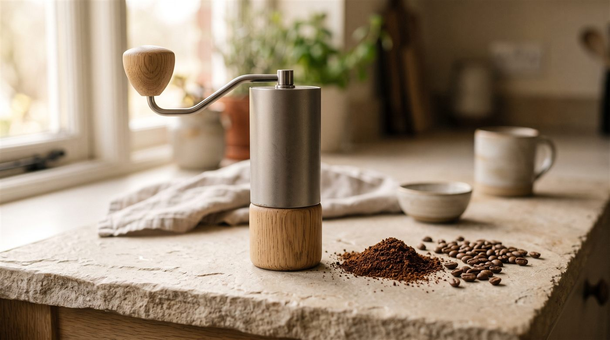
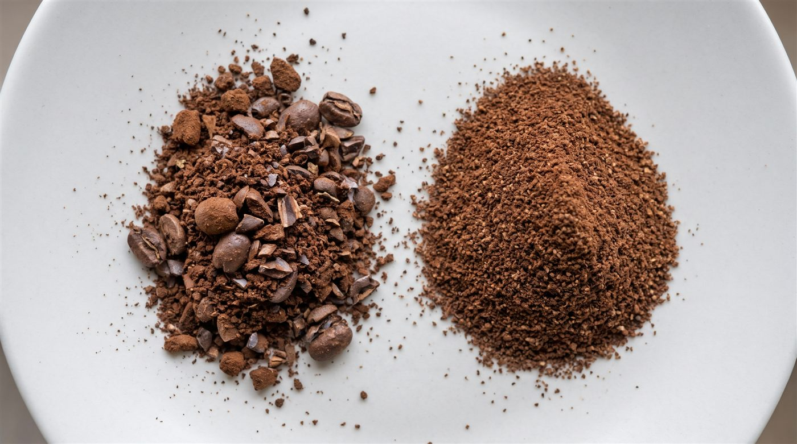
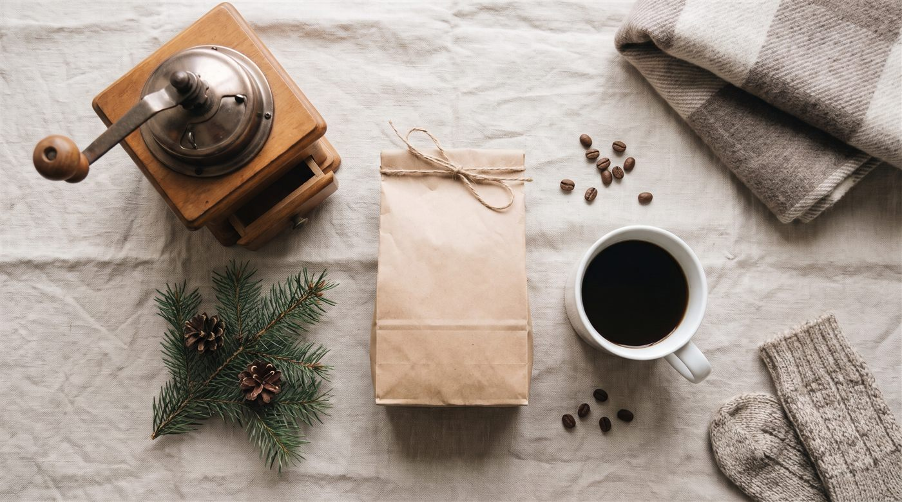

Inicio / Journal / Molinillo de café: cómo elegir el tuyo (muelas o cuchillas, manual o eléctrico)
Guías y consejos
Molinillo de café: cómo elegir el tuyo (muelas o cuchillas, manual o eléctrico)
El molinillo es la compra que más mejora tu café en casa, más que la cafetera. Elige uno de muelas, no de cuchillas: las muelas muelen todo el grano a un tamaño parecido, y eso hace que el café se extraiga de forma pareja. Si preparas filtro, moka o prensa francesa, un molinillo manual de muelas es la opción con mejor relación calidad-precio. Si preparas espresso, necesitas un molinillo que muela muy fino y con ajustes pequeños.

¿Merece la pena moler el café en casa?
Sí, si te importa el sabor. El grano entero protege los aromas por dentro. Al molerlo, multiplicas la superficie que toca el aire, y el aroma se va mucho antes.
| Café en grano (molido en casa) | Café ya molido | |
|---|---|---|
| Aroma | Se conserva más tiempo | Se pierde antes, sobre todo una vez abierto |
| Ajuste | Eliges la molienda exacta para tu cafetera | Viene con una molienda fija |
| Comodidad | Un paso más cada mañana | Abrir y preparar |
| Para quién | Quien quiere la mejor taza posible | Quien prioriza la rapidez |
Si aún no tienes molinillo, compra el café molido en el momento del pedido y para tu método, y gástalo en pocas semanas. Te lo explicamos en cuánto dura el café.
Muelas o cuchillas: la diferencia que más se nota
Es la decisión más importante, y la más fácil.

- Cuchillas: una hélice gira y corta el grano al azar. Salen trozos grandes mezclados con polvo muy fino. El polvo se extrae de más y amarga. Los trozos grandes se extraen de menos y dan acidez. El resultado es una taza confusa.
- Muelas: el grano pasa entre dos piezas con dientes, separadas por una distancia que tú ajustas. Casi todo sale de un tamaño parecido. El agua extrae el café de forma pareja.
| Molinillo de cuchillas | Molinillo de muelas | |
|---|---|---|
| Cómo muele | Corta al azar | Tritura a una distancia fija |
| Molienda | Muy irregular | Bastante uniforme |
| Ajuste | Solo por tiempo (más o menos segundos) | Por pasos o continuo |
| Sirve para espresso | No | Sí, si está pensado para ello |
| Precio orientativo | 15 a 35 € | Desde unos 40 € (manual) |
Nuestra recomendación: si tienes un molinillo de cuchillas, el cambio a uno de muelas mejora la taza más que cambiar de cafetera.
Muelas cónicas o planas
Dentro de los molinillos de muelas hay dos formas:
- Cónicas: una pieza en forma de cono gira dentro de un anillo. Son las más habituales en molinillos manuales y eléctricos de casa. Suelen ser más silenciosas.
- Planas: dos discos, uno frente a otro. Muy uniformes, más habituales en molinillos de gama alta y de cafetería.
Para empezar en casa, no te obsesiones con esto. Importa mucho más que el molinillo tenga muelas de buena calidad y un ajuste estable.
Manual o eléctrico
| Manual | Eléctrico | |
|---|---|---|
| Precio a igual calidad de molienda | Más barato | Más caro |
| Tiempo | Uno o dos minutos por taza, más si es para espresso | Unos segundos |
| Ruido | Casi ninguno | Sí |
| Para cuántas tazas | Una o dos | Varias seguidas |
| Viajes | Cabe en la mochila | Se queda en casa |
Elige manual si haces una o dos tazas al día, quieres buena molienda sin gastar mucho o te gusta el ritual.
Elige eléctrico si preparas para la familia, tienes prisa por las mañanas o te cuesta el esfuerzo de girar la manivela.
Qué molienda necesita cada cafetera
Cada método pide un tamaño de grano distinto. Cuanto más tiempo está el agua en contacto con el café, más gruesa debe ser la molienda.
| Método | Molienda | Se parece a |
|---|---|---|
| Espresso | Fina | Sal fina |
| Cafetera italiana (moka) | Media-fina, algo más gruesa que la de espresso | Sal fina, un poco más gruesa |
| AeroPress | Media-fina (depende de la receta) | Sal de mesa |
| V60 y otros goteros | Media-fina a media | Arena fina |
| Cafetera de goteo eléctrica | Media | Arena |
| Chemex | Media-gruesa | Azúcar moreno |
| Prensa francesa | Gruesa | Sal gorda |
| Cold brew | Muy gruesa | Pimienta partida |
¿Quieres verlo? En nuestras guías de preparación tienes un comparador visual de molienda para cada método.
Cuánto gastar en un molinillo de café
Los precios son orientativos y cambian según la tienda y la época del año.
| Tipo | Rango orientativo | Para quién |
|---|---|---|
| Cuchillas | 15 a 35 € | Solo si vas a moler especias. Para café, no. |
| Manual de muelas | 40 a 150 € | La mejor compra para filtro, moka y prensa |
| Eléctrico de muelas para filtro | 100 a 250 € | Quien prepara varias tazas de filtro al día |
| Eléctrico de muelas apto para espresso | Desde unos 200 € | Quien tiene cafetera de espresso |
Regla práctica: si tienes cafetera de espresso, reparte el presupuesto. Un buen molinillo con una cafetera sencilla da mejor café que una cafetera cara con un mal molinillo.
Elige tu molinillo en 3 preguntas
Elige tu molinillo en 3 preguntas
6 cosas que mirar antes de comprar
- Que sea de muelas. Lo pone en la descripción. Si dice "cuchillas" o "hélice", descártalo.
- El tipo de ajuste. Por pasos (clics) es fácil de repetir. El ajuste continuo permite afinar más. Para espresso, busca pasos muy pequeños o ajuste continuo.
- Para qué métodos sirve. Algunos molinillos solo muelen bien para filtro. Si haces espresso, comprueba que lo indique.
- La retención. Es el café que se queda dentro del molinillo después de moler. Cuanto menos, mejor: tu siguiente taza no llevará café viejo.
- La limpieza. Que las muelas se desmonten con facilidad. Límpialas con un cepillo cada pocas semanas.
- La capacidad. En los manuales, que quepan los gramos de tu receta de una vez (por ejemplo, 15 a 20 g para una taza de filtro).
Si es para regalar

Un molinillo manual de muelas es un regalo seguro para alguien que ya prepara café en casa: no ocupa sitio, no hace ruido y mejora cualquier cafetera. Acompáñalo de una bolsa de café en grano recién tostado, y tendrá todo para empezar.
Cómo sacarle partido a tu molinillo
- Muele justo antes de preparar, solo la cantidad que vas a usar.
- Pesa el café. Una báscula de cocina te ahorra muchas tazas fallidas.
- Ajusta por el sabor:
- ¿Sabe amargo o seco? Muele un punto más grueso.
- ¿Sabe ácido o aguado? Muele un punto más fino.
- Cambia una cosa cada vez. Si cambias molienda y cantidad a la vez, no sabrás qué ha funcionado.
- Si moles café congelado, sale algo más fino. Un estudio publicado en Scientific Reports (2016) midió que los granos más fríos dan partículas más pequeñas y uniformes. Sube un punto el grosor.
- No laves las muelas con agua salvo que el fabricante lo indique. Usa un cepillo.
Preguntas
Preguntas frecuentes
¿Otra duda? Escríbenos →01¿Qué es mejor, un molinillo de muelas o de cuchillas?
De muelas. Muele el grano a un tamaño parecido y el café se extrae de forma pareja. El de cuchillas da trozos muy distintos, y la taza sale a la vez amarga y ácida.
02¿Molinillo de café manual o eléctrico?
Manual si haces una o dos tazas al día y quieres la mejor molienda por menos dinero. Eléctrico si preparas varias tazas seguidas o buscas comodidad.
03¿Qué molinillo necesito para espresso?
Uno de muelas pensado para espresso, con ajuste muy fino: pasos pequeños o ajuste continuo. Muchos molinillos de filtro no llegan a moler lo bastante fino.
04¿Cuánto tiempo dura el café molido?
Pierde aroma mucho más rápido que el grano entero. Si lo compras molido, guárdalo bien cerrado, lejos de la luz y el calor, y gástalo en pocas semanas.
05¿Cada cuánto hay que limpiar el molinillo?
Pásale un cepillo por las muelas cada dos a cuatro semanas si lo usas a diario. Si cambias de café a menudo o usas tuestes oscuros, límpialo más a menudo.
Fuentes
- Uman, E. et al., «The effect of bean origin and temperature on grinding roasted coffee», Scientific Reports 6, 24483 (2016): https://www.nature.com/articles/srep24483
- Specialty Coffee Association (SCA), recursos de preparación y molienda: https://sca.coffee/
Última actualización: 9 de noviembre de 2026. Los precios son orientativos y pueden cambiar según la tienda y la época del año.